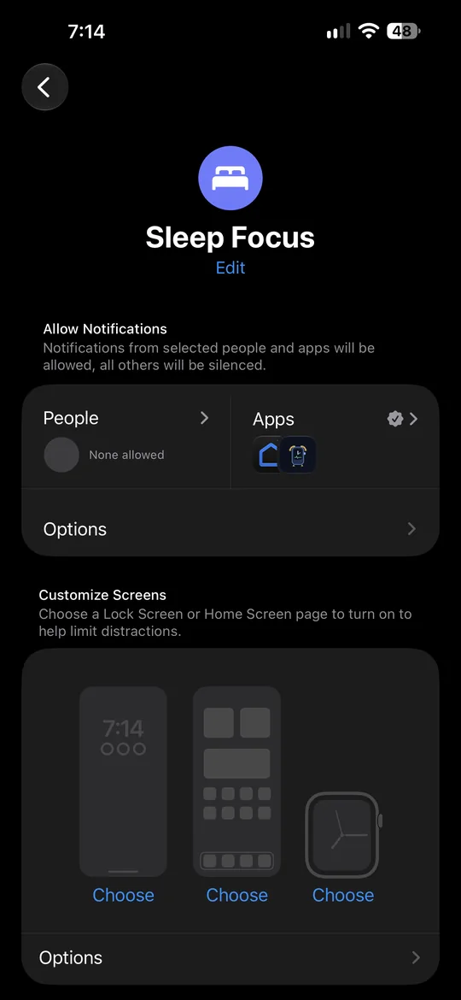

WhatchAlarm · User guide
Setup and user guide
WhatchAlarm is a smart alarm that runs on your Apple Watch. You set the latest time you can get up and a window before it. Inside that window the watch looks for a lighter moment — when you are already stirring — and wakes you then. If it doesn't find one, it wakes you exactly at the time you set.
The iPhone app is the setup guide and the place to buy the app. The alarm itself lives entirely on the watch: your iPhone can be in another room, or switched off.
What you need
- Apple Watch with watchOS 10 or later
- iPhone with iOS 17 or later, paired with the watch
- About five minutes for the setup below
Do the setup once, in the evening before your first night.
Setup in five steps
Steps 1, 3 and 4 are on the iPhone, step 2 is on the watch. Each one is done once.
Install the watch app
iOS doesn't always install companion watch apps by itself. On your iPhone:
- Watch app
- My Watch
- General
- scroll down
- Available Apps
- WhatchAlarm
- Install
Tip: on that same General screen, turning on Automatic App Install makes future watch apps install themselves.

Allow access on the watch
Open WhatchAlarm on your Apple Watch. The first time, it asks for three permissions — allow all three:
These prompts appear on the watch, not on the iPhone, because the alarm runs on the watch. Without them it can still wake you at your set time, but it can't find a lighter moment.
Let WhatchAlarm through Sleep Focus
This step matters: without it, Sleep Focus can hold your alarm back. On your iPhone:
- Settings
- Focus
- Sleep
- Apps
- under Allow Notifications
- add WhatchAlarm


Turn on sleep tracking
This makes the watch measure your heart rate more often overnight. On your iPhone:
- Watch app
- My Watch
- Apps
- Sleep
- Track Sleep with Apple Watch
The Apps row is near the bottom of the My Watch list. If you already see your sleep data in the Sleep app on your watch, it's on and there's nothing to do.

Wear your watch to bed
Through the night the watch senses your movement and heart rate — the signals WhatchAlarm uses to tell lighter sleep from deeper sleep. Make sure it's charged before bed.
Setting an alarm
For one morning


- Open WhatchAlarm on the watch and turn the Digital Crown to pick your latest wake-up time.
- Tap Window to choose how long before that time it may wake you: 10, 15, 20 or 30 minutes. 20 minutes is a good start.
- Sound — leave it on if you want sound at the end (see How it wakes you).
- Tap Start. The screen shows Alarm set, the day and time, and the window.
To cancel before it rings:
- Manage
- Stop Alarm
Every week: a schedule
On the watch, tap Schedule at the bottom of the main screen. Turn on the days you want, each with its own time. On a weekday, Use for Mon–Fri copies that time to all five weekdays.
A scheduled alarm rings on those days by itself. To skip a single morning, open WhatchAlarm when that alarm is set and tap Manage → Skip this alarm; the schedule stays on.
The smart part needs one tap a day
Apple only lets a watch app prepare its night-time session while the app is open on screen, and no more than about a day and a half ahead. So:
- The alarm itself always rings — it's set up days ahead.
- The smart part (finding a lighter moment) switches on whenever you open WhatchAlarm within a day of the alarm. Stopping the morning's alarm on the watch counts, so on most days you don't need to do anything.
- If a day slips through, an evening reminder asks you to tap it. Tapping it opens the app, and that's enough. Pick its time when the watch is on your wrist, not on the charger:
- Settings
- Evening reminder
How it wakes you
Gentle when it can be, firm when it must. Which one you get depends on whether the watch found a lighter moment.
Lighter moment found
Early wake: eased up
You're already close to waking, so it starts with taps on the wrist that build up over three minutes. Still asleep? The vibration firms up to the strength you chose in Settings → Wake-up strength (Gentle, Standard or Strong). No sound at this stage.
If you still haven't stopped it when your set time comes, it switches to the full-strength wake.
Your set time reached
Deadline: full strength
No easing in — you're out of time. The strongest vibration the watch has, back to back, from the first second. Two minutes later sound joins in, and it keeps going until you stop it.
When it starts with sound straight away
The watch can vibrate for WhatchAlarm only while the app's night session is running, and Apple limits that session to about 30 minutes. With a 30-minute window the whole session is spent looking for lighter sleep, so it ends right at your set time; after that the app can wake you only with notifications, which is why sound starts at once. The same happens if you haven't opened WhatchAlarm on the watch within a day of the alarm: then there's no night session at all.
For vibration first, keep the window at 20 minutes or less.
Sound and Silent Mode
Sound needs two things: Sound switched on in WhatchAlarm, and the watch not in Silent Mode (the bell in the watch's Control Center). In Silent Mode Apple Watch lets no app play sound — Apple's own alarm included — so WhatchAlarm wakes you by vibration alone.
Stopping it
Tap Stop in WhatchAlarm, or tap the alarm notification.
Your next alarm on the watch face
Add the WhatchAlarm complication to see your next alarm at a glance. Touch and hold the watch face, then:
- Edit
- choose a spot
- WhatchAlarm
- Next alarm
It shows the time and the day of your next alarm. When no alarm is set, it shows Off. On larger complication slots it also says whether the smart part is on; Tap to switch on means it isn't yet — one tap opens WhatchAlarm and switches it on.


Settings on the watch
- WhatchAlarm
- Settings
- Time format
- Automatic, 12-hour or 24-hour.
- Wake-up strength
- How firmly an early wake carries on after its first taps: Gentle, Standard or Strong. At your set time it always wakes at full strength.
- Evening reminder
- On or off, and its time.
- Diagnostics
- A log of what the alarm did and why. It stays on the watch unless you tap Send log yourself — handy if you contact us about a problem.
History on the main screen shows your last two weeks: when it woke you, and whether it was early (movement or heart rate) or at your set time.
Free trial and purchase
WhatchAlarm is free for 60 days, with everything included. After that, a single purchase unlocks it for good — not a subscription, nothing renews.
Buy any time in the iPhone app:
- Setup guide & settings
- Purchase
Bought it before, on a new phone or after reinstalling? Tap Already bought it? Restore purchase. It always tells you the result:
- Purchase restored — the app is unlocked.
- No purchase found — the App Store account on this iPhone hasn't bought WhatchAlarm. Sign in with the Apple ID you bought it with (Settings → your name → Media & Purchases) and try again.
- Couldn't restore — the App Store didn't respond. Check your connection and try again.

Alarm not waking you?
Check these in order.
- WhatchAlarm is allowed in Settings → Focus → Sleep → Apps (step 3).
- The watch was on your wrist and charged.
- The alarm was set (Start) or scheduled on the watch.
- Access was allowed on the watch itself (step 2).
- No sound? The watch is probably in Silent Mode — that's expected, it wakes you by vibration.
Privacy
WhatchAlarm has no account, no servers, no analytics and no ads. Your heart rate and movement are read on the watch, used on the watch, and never leave it.
Full policy: Privacy Policy. Questions: contact@nghive.app